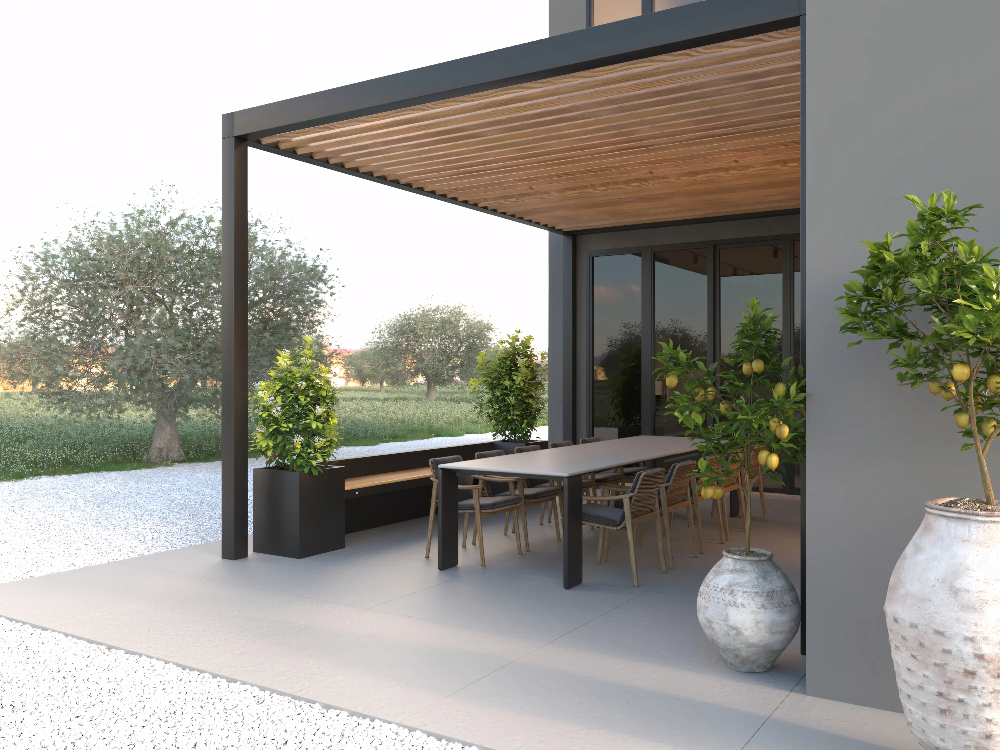
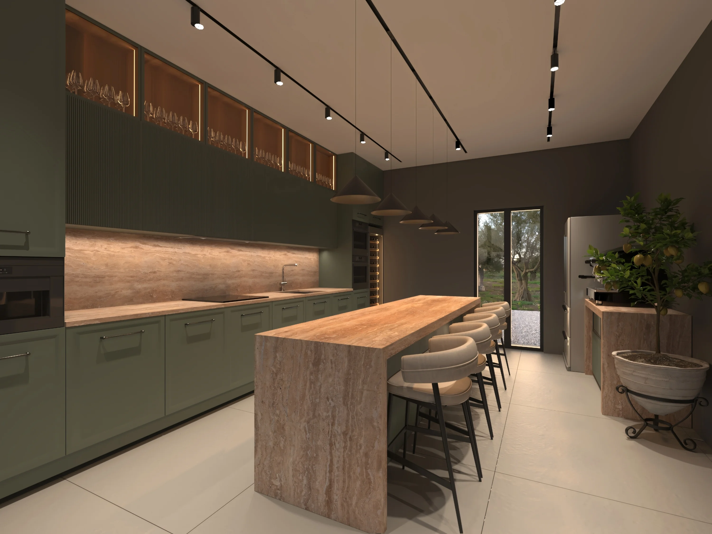
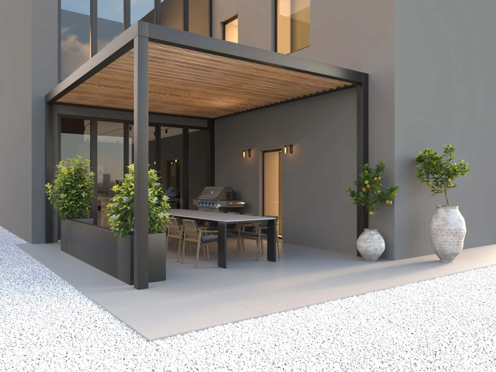
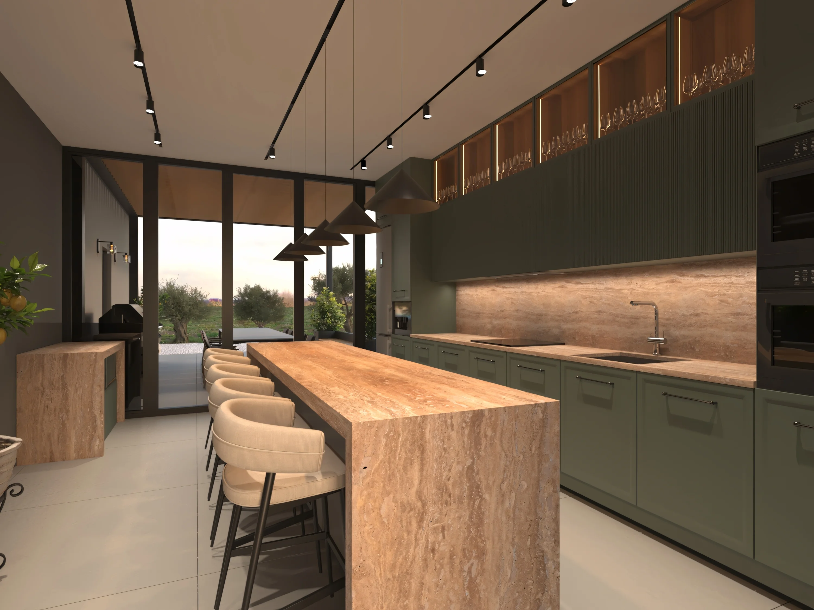
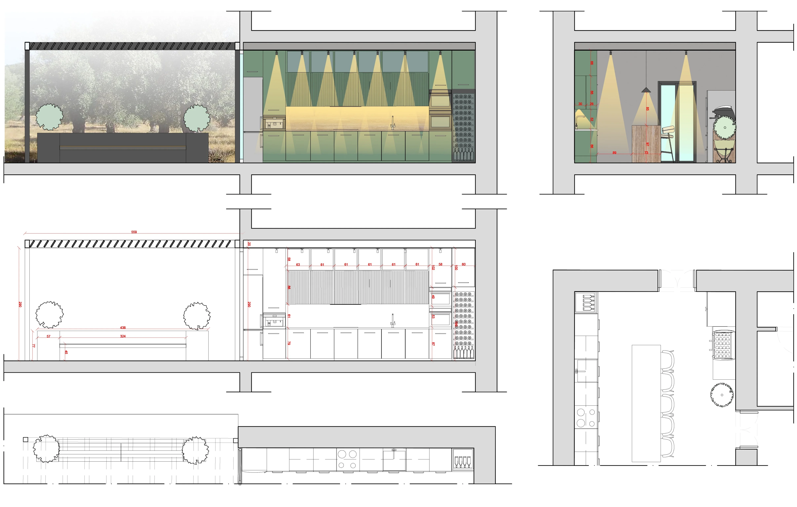

CUCINA NEL MATESE
Simbiosi tra interno ed esterno
L'esperienza inizia nello spazio interno, dominato da una grande e accogliente isola centrale in finitura legno. La parete operativa gioca su un'elegante alternanza di pensili caldi e basi in un sofisticato verde opaco. La matericità degli arredi è esaltata dalla pavimentazione in Florim Essential Mood Cool Powder 01 e da un'illuminazione scenografica composta da faretti sospesi e sistemi a binario.

Attraverso le ampie vetrate, l'ambiente si estende senza interruzioni verso una spaziosa zona pranzo all'aperto. Qui, un grande tavolo riposa all'ombra di un'elegante pergola con copertura a listelli di legno, incorniciata da grandi vasi di limoni che si affacciano sulla distesa degli ulivi.
Questo progetto è l'esito di una ricerca accademica maturata durante il Biennio Specialistico (anno accademico 2025/2026) presso l'Accademia Italiana di Roma, sotto la supervisione del Prof. Fabio Valente.



